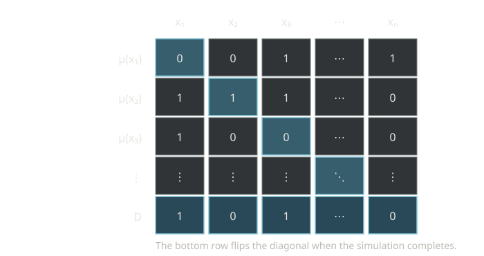

We will come up with a language $L$ by defining a TM $D$, and then setting $L$ to be the set of all strings $x$ that $D$ accepts. We will then show that $L \in \mathsf{DTIME}(G(n))$ but $L \notin \mathsf{DTIME}(g(n))$, which concludes the proof.
Throughout, we use two facts. First, a time constructible function $T$ satisfies $T(n) \ge n$, so $g(n) \ge n$ and $G(n) \ge n$. Second, by Theorem 4.1 , if a TM $M$ halts on input $x$ within $t$ steps, then $\mathcal{U}$ halts on input $(\lfloor M \rfloor, x)$ within $C_M, t \log t$ steps and gives the same answer as $M$, where $C_M$ depends only on $M$.
The map $\mu$.
Let $\lfloor M \rfloor$ denote the string representation of a TM $M$. We define a map $\mu : \Sigma^* \to \lbrace \text{TMs}\rbrace $ as follows.
If $x \neq 0^k 1 \lfloor M \rfloor$ for all $k \in \mathbb{N}$ and all TMs $M$, then $\mu(x)$ is the TM that always rejects.
If there exist $k \in \mathbb{N}$ and a TM $M$ such that $x = 0^k 1 \lfloor M \rfloor$, then $\mu(x) = M$.
In item 2, $k$ and $M$ are unique, since $k$ is the number of leading $0$s of $x$, so $\mu$ is well defined. Infinitely many strings map to each TM $M$. Indeed, for every $k \in \mathbb{N}$, item 2 gives $\mu(0^k 1 \lfloor M \rfloor) = M$, and the strings $0^k 1 \lfloor M \rfloor$ are all different, since they have different lengths. We will see in the proof that $L \notin \mathsf{DTIME}(g(n))$ why this matters.
The diagonal table.
We use diagonalisation, so we write down our table as before. Let $x_1, x_2, \dots$ be the strings of $\Sigma^*$ in length-lexicographic order. Row $i$ of the table corresponds to the TM $\mu(x_i)$ and column $j$ to the string $x_j$, and the entry $A[i,j]$ is $1$ if $\mu(x_i)$ accepts $x_j$ and $0$ otherwise; see Figure 1 . On input $x_i$, the machine $D$ will try to output the opposite of $A[i,i]$.

The columns are the strings $x_1, x_2, \dots$ in length-lexicographic order, and the rows are the TMs $\mu(x_1), \mu(x_2), \dots$. The last row records which strings $D$ accepts, that is, which strings are in $L$. Whenever $D$ finishes simulating $\mu(x_i)$ on $x_i$ within its time budget, $D$ disagrees with $\mu(x_i)$ on $x_i$.
The machine $D$.
We define $D$ in terms of the universal TM $\mathcal{U}$. $D$ has all the tapes and states of $\mathcal{U}$, and whenever $D$ is in a state of $\mathcal{U}$, it makes the same move on the tapes of $\mathcal{U}$ as $\mathcal{U}$ would. So running $\mathcal{U}$ inside $D$ takes exactly as many steps as running $\mathcal{U}$ on its own. In addition, $D$ has a work tape for a clock, and extra states for the steps below that do not involve $\mathcal{U}$. We need $\mathcal{U}$ because $D$ is a single TM with a fixed number of tapes and a fixed alphabet, so it cannot have the transition function of every TM built in; instead it has the transition function of $\mathcal{U}$ built in, and $\mathcal{U}$ can simulate any TM.
On input $x$ of length $n$, $D$ does the following.
Read $x$. This takes $n \le G(n)$ steps.
Compute $G(n)$ and write $G(n)$ zeroes on a work tape reserved for this purpose, which we call the clock. Since $G$ is time constructible, this takes $O(G(n))$ steps. From now on, every step of $D$ also erases one zero from the clock, and if the clock becomes empty, $D$ halts immediately and rejects, so $x \notin L$.
Compute $\lfloor \mu(x) \rfloor$, and write $(\lfloor \mu(x) \rfloor, x)$ on the input tape of $\mathcal{U}$.
Run $\mathcal{U}$ on input $(\lfloor \mu(x) \rfloor, x)$. This simulates $\mu(x)$ on $x$: if $\mu(x)$ halts on $x$, then $\mathcal{U}$ halts with the same answer.
If $\mathcal{U}$ accepts, that is, $\mu(x)$ accepts $x$, then $D$ rejects, so $x \notin L$. If $\mathcal{U}$ rejects, that is, $\mu(x)$ rejects $x$, then $D$ accepts, so $x \in L$.
The clock has two consequences. First, $D$ halts within $O(G(n))$ steps on every input, whatever $\mu(x)$ does; without the clock, step 4 would run for as long as $\mu(x)$ runs on $x$, possibly forever. Second, if the clock runs out before $\mathcal{U}$ halts, then $D$ rejects regardless of what $\mu(x)$ does on $x$, so on that input $D$ need not disagree with $\mu(x)$. The first consequence gives $L \in \mathsf{DTIME}(G(n))$, and the second is the obstacle we must overcome to show $L \notin \mathsf{DTIME}(g(n))$.
$L \in \mathsf{DTIME}(G(n))$.
Let $x$ be an input of length $n$.
Step 1 takes $n \le G(n)$ steps.
Step 2 takes $O(G(n))$ steps.
Because of the clock, steps 3 to 5 take at most $G(n) + 1$ steps in total.
So $D$ halts on every input within $O(G(n))$ steps. Since $D$ halts on every input, it rejects every string it does not accept, so $D$ decides $L$. Hence $L \in \mathsf{DTIME}(G(n))$.
$L \notin \mathsf{DTIME}(g(n))$.
Suppose, for contradiction, that $L \in \mathsf{DTIME}(g(n))$, that is, some TM $M$ decides $L$ in time $O(g(n))$. Then there are constants $c$ and $n_0$ such that $M$ halts within $c,g(n)$ steps on every input of length $n \ge n_0$. Let $x = 0^k 1 \lfloor M \rfloor$, where $k$ will be chosen below, and let $n = |x|$. Then $\mu(x) = M$, so on input $x$, $D$ simulates $M$ on $x$. In terms of the table, $M$ is the TM in row $i$ for every $x_i$ of the form $0^k 1 \lfloor M \rfloor$, so $M$ appears in infinitely many rows. Choosing $k$ amounts to choosing one of these rows, and we look at its diagonal entry, where $M$ is run on $x$.
We first show that, if $k$ is large enough, this simulation finishes before the clock runs out. On input $x$:
Step 3 takes $O(n)$ steps: skipping the prefix $0^k 1$ and copying $x$ take $O(n)$ steps, and copying $\lfloor M \rfloor$ and checking that it is a valid encoding takes a number of steps depending only on $M$.
If $n \ge n_0$, then $M$ halts on $x$ within $c,g(n)$ steps, so $\mathcal{U}$ halts on $(\lfloor M \rfloor, x)$ within $O(g(n) \log g(n))$ steps, with the same answer as $M$.
The constants hidden in both bounds depend only on $M$, not on $k$. Since $g(n) \ge n$, steps 3 and 4 together take $O(g(n) \log g(n))$ steps, and since $G(n) = \omega(g(n)\log{}g(n))$, this is less than $G(n)$ for all sufficiently large $n$. Since $n = k + 1 + |\lfloor M \rfloor|$, we can choose $k$ so large that $n \ge n_0$ and this bound holds. This is possible because infinitely many strings map to $M$: there is one, $0^k 1 \lfloor M \rfloor$, for every $k$. For this chosen $k$, the clock does not run out before $\mathcal{U}$ halts. This fact that the clock does not run out is crucial .
Now we derive the contradiction. Since $D$ reaches step 5 on input $x$, and $\mathcal{U}$ gives the same answer as $M$, $D$ accepts $x$ if and only if $M$ rejects $x$. By the definition of $L$, $x \in L$ if and only if $D$ accepts $x$. As we assumed, $M$ decides $L$, so $x \in L$ if and only if $M$ accepts $x$. Together, $M$ accepts $x$ if and only if $M$ rejects $x$, which is impossible. This concludes the proof.